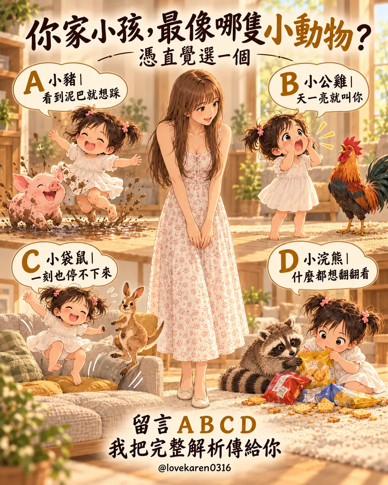

CHOOSE ONE
第一眼想到的是哪一隻？
點開選項就能看完整解析，還有一個今天就能試的小方法。
小豬看到泥巴就想踩
A · 小豬型孩子
世界那麼好玩，
先讓我踩一下嘛
衣服才剛換好，下一秒已經踏進水窪；你正想喊「不要」，她回頭笑得比誰都開心。你家的日常，是不是常常這樣？
她現在在做什麼
摸摸、踩踩、弄得亂七八糟，都是她認識世界的方式。她還在學「髒了可以處理」和「有些地方不能玩」，所以當下更在意腳底的感覺，而不是衣服待會要誰洗。
爸媽累的地方
你可能已經算到回家還有洗澡、洗鞋、拖地。每次都得在孩子的快樂和自己的善後之間做選擇，久了難免會先爆炸。
今天可以這樣說
「這攤可以踩三下，踩完我們一起去洗手。這雙鞋不行，我們先換成可以弄髒的。」
先說清楚範圍與下一步，孩子比較知道快樂可以玩到哪裡；你也不用每次都靠臨場大喊來收尾。
給爸媽的一句話
有些亂，是孩子留下的探索痕跡。安排好能弄髒的時間與衣服，你也可以少一點緊繃。

結帳輸入專屬折扣碼 Karen
可折抵 NT$100
優惠以商店結帳頁實際顯示為準
小公雞天一亮就叫你
B · 小公雞型孩子
媽媽，起床了！
今天要開始了耶
鬧鐘還沒響，臉先被小手戳醒。她有一百件事想跟你說，你卻只想再睡五分鐘。這份熱情真的很可愛，也真的很考驗爸媽。
她現在在做什麼
一睜開眼就想分享看到的事、想到的事。她把你當成最想找的人，卻還不太懂大人需要一段從睡夢切換到白天的時間。
爸媽累的地方
不是你不想陪她，而是每天都被迫以全速開機。連一口水、一趟廁所的時間都沒有，早上的好心情很容易被耗光。
今天可以這樣說
「早安，我聽到了。媽媽先喝水、刷牙，你拿一本書來，等我坐好就聽你說。」
把「等等」換成看得見的小步驟。她知道什麼時候輪到自己，你也能慢慢醒過來。
給爸媽的一句話
孩子很期待見到你，也值得學會等你準備好。兩件事可以同時成立。

結帳輸入專屬折扣碼 Karen
可折抵 NT$100
優惠以商店結帳頁實際顯示為準
小袋鼠一刻也停不下來
C · 小袋鼠型孩子
她的電量，
好像永遠是百分之百
沙發是跳跳床，走廊是跑道，剛剛說要休息的人，下一秒又衝出去了。你追得氣喘吁吁，她還在問：「再一次好不好？」
她現在在做什麼
她喜歡用身體參與每件事，開心、期待和好奇都寫在動作裡。對她來說，「坐好」這個要求太抽象；讓身體先有活動的出口，才更容易接上下一件事。
爸媽累的地方
你得一直注意她會不會撞到、跌倒、碰壞東西。當大人的注意力被拉到極限，連一句普通的提醒都可能變成吼叫。
今天可以這樣說
「沙發不能跳，我們去墊子上跳十下。跳完喝水，再一起看書。」
給出安全的地方、明確的次數和下一步。她有機會動夠，你也不用整天當裁判。
給爸媽的一句話
你不用跟著她的速度跑一整天。先顧好安全，也替自己留一個喘口氣的位置。

結帳輸入專屬折扣碼 Karen
可折抵 NT$100
優惠以商店結帳頁實際顯示為準
小浣熊什麼都想翻翻看
D · 小浣熊型孩子
咦，這裡面
到底藏了什麼？
一轉身，餅乾盒開了、櫃子翻了、地上多了一條餅乾屑的路。她一臉認真地在研究新發現，你卻已經看到等一下要打掃的畫面。
她現在在做什麼
每個盒子、抽屜和袋子都像一個謎。她想知道裡面有什麼，也正在試「哪些東西我能自己拿」。好奇心很旺，規則還需要大人一再說明和練習。
爸媽累的地方
每次整理完又被翻亂，最崩潰的常常不是那一包餅乾，而是你覺得自己的提醒都白說了。
今天可以這樣說
「想吃餅乾先跟我說。這一盒可以一起選，那個櫃子要大人陪你開。」
把可以探索的東西放在她拿得到的地方，危險或不適合拿的先收好。規則短短說、每次用一樣的話，她才比較記得住。
給爸媽的一句話
好奇可以留下，界線也可以守住。先整理環境，再用簡單清楚的話帶她練習。

結帳輸入專屬折扣碼 Karen
可折抵 NT$100
優惠以商店結帳頁實際顯示為準
小測驗是日常觀察，孩子可能同時像好幾種動物。選最有共鳴的那一個就好。
孩子每天都長出新花樣。
我們也可以一天一天，
找到更適合彼此的相處方式。
FIND YOUR CRYSTAL
想挑一條
真的適合你的水晶？
官網上還有很多款，可以照你想補的能量、星座或五行去找。
不知道從哪裡看起的話，先把全部款式滑過一遍。
點擊前往官網，慢慢挑你的那一條